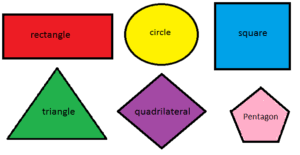

HTML-элемент <area> определяет область внутри карты изображения, в которой есть предварительно определённые области, доступные для кликов.
Карта изображения позволяет связывать геометрические области изображения с гипертекстовыми ссылками.
Этот элемент используется только внутри элемента <map>.
Атрибуты тега :
- shape — форма области. Может быть rect (прямоугольник), circle (круг) или poly (многоугольник).
- coords — координаты области. Зависят от значения shape. Для прямоугольника указываются координаты левого верхнего угла и правого нижнего угла (x1,y1,x2,y2).
Для круга указывается координаты центра и радиус (x,y,r).
Для многоугольника указываются координаты всех точек (x1,y1,x2,y2,x3,y3,...).
- alt — описание области для пользователей, которые не могут визуально увидеть карту изображения.
- download — предлагает скачать по ссылке целевой ресурс, указанный в href, вместо его отображения в браузере.
- href — адрес, на который будет переходить пользователь при клике на область.
- media — условия, которые должны быть выполнены для применения стиля к целевой странице.
- referrerpolicy — политика отправки referrer при переходе по ссылке.
Это влияет на то, как информация о странице-источнике передается на страницу-назначение.
- rel — определяет отношение между текущей страницей и целевой страницей.
- target — указывает, как будет открыта целевая страница.
Значения: _self (в текущем окне), _blank (в новом окне), _parent (в родительском фрейме) или _top (во всем окне браузера).
Закрывающего тега быть не должно.
